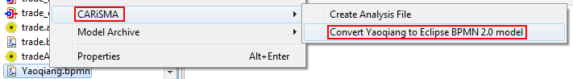

To enable the support for various modeling tools, the CARiSMA group developed a converter for Yaoqiang BPMN 2 models.
The converter can be executed by right clicking on a BPMN 2 model (File extension *.bpmn or *.bpmn2)
→ CARiSMA → Yaoqiang to Eclipse BPMN 2.0 model.
If the transformation successfully ended an additional model will appear in your workbench.
Note: A transformation for a CARiSMA analysis is not required. It will be done automatically,
if a conversion is necessary.

Figure: Yaoqiang Converter Menu
The BPMN 2.0 models in Eclipse should be still compatible with the Yaoqiang BPMN 2 Editor. There might be some warnings during the opening process about unknown elements, but these elements are not necessary for the BPMN 2 model. But for easier and safer usage we recommend our EMF to Yaoqiang converter. It can be executed by right clicking on an EMF BPMN 2 model (File extension *.bpmn2) →
CARiSMA →
Eclipse BPMN 2.0 to Yaoqiang model. If the transformation successfully ended an additional model will appear in your workbench.